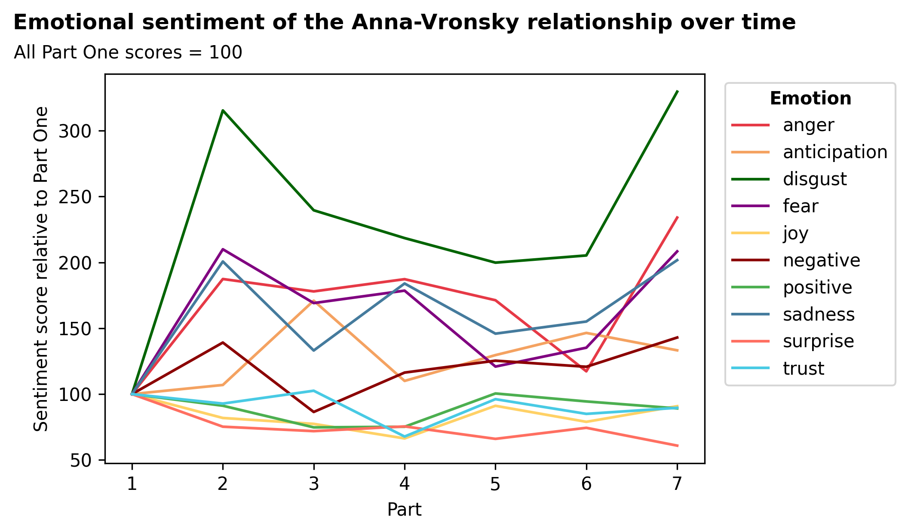

Pranay Varada | Slavic 132
Leo Tolstoy's Anna Karenina is regarded as one of the greatest novels in the history of literature, if not simply the greatest.
One of its most renowned characteristics is its intricate depictions of relationships, eloquently capturing the minute elements of social interactions and character development.
This is a social-emotional network analysis of the relationships between Anna Karenina's seven major characters, traced through the eight parts of the novel.
Select a part of the novel and emotional metric to visualize the interactions between each pair of characters.
The thicker a line is between two characters, the more they interact in the selected part (min. 500 words). Negative emotions are represented with a red color scale, positive or neutral emotions with a green color scale, and overall sentiment with both.
I began the process of working toward a relationship sentiment analysis by taking a digitized version of the novel and using regular expressions to segment it into sentences or small groups of sentences. With Anna Karenina being quite a long novel – over 800 pages in the Pevear and Volokhonsky translation – there were 15,920 of these sentences, spread out over eight parts. I created a spreadsheet to classify each sentence as being part of an interaction or describing a relationship between two of the novel’s seven main characters: the titular Anna, her lover Vronsky, her husband Karenin, her brother Stiva, Stiva's wife Dolly, Dolly’s sister Kitty, and Stiva’s friend Levin. Over the course of the novel, almost every pair of these characters has an interaction with one another.
In the classification process, I looked for passages where two characters were in dialogue or their relationship (romantic, friendly, or otherwise) was being discussed by the narrator or other characters. I found 5,995 sentences that fit these criteria, with the most detailed relationships being Anna-Vronsky (34,700 words) and Levin-Kitty (29,790). This process essentially yielded 75 excerpts from the novel, each of which corresponded to a specific relationship between two major characters in a specific part (1-8) of the novel.
Within each of these excerpts, I performed sentiment analysis to quantify the emotional intensity of each relationship across several dimensions. I emulated the approach documented here, which analyzed the emotional sentiment of the Harry Potter novels. To bridge the gap between words and emotions, I used the Word-Emotion Association Lexicon, published by the National Research Council of Canada, which scores over 14,000 unique words as being associated or not associated with positive and negative sentiment as well as eight key emotions: anger, anticipation, disgust, fear, joy, sadness, surprise, and trust. I developed a program in Python to apply this lexicon to each of the relationship-part excerpts, such that I calculated the number of words associated with each of these ten dimensions for each excerpt. I divided these totals by the length of each excerpt to yield a set of emotional sentiment scores that could be compared across different relationships and different parts of the novel.
After obtaining the scores across each relationship in each part, I built the network visualization above using the D3 Javascript library. The thickness of each line is proportional to the word count of the relevant interaction. If one of the eight emotions is selected, the intensity of the color reflects the proportion of words in the interaction that are associated with that emotion; meanwhile, “overall positivity” is calculated as the proportion of words associated with positivity minus the proportion of words associated with negativity.
The plot below shows the trajectories of each emotion or sentiment in the Anna-Vronsky relationship over the seven parts of Anna Karenina in which it is present. To compare all ten emotions and sentiments, all scores are expressed as a percentage of Part One scores (e.g. sadness in Part Two is about 200% of sadness in Part One, or twice as high).
The first signs of trouble in the Anna-Vronsky relationship appear in Part Two, with notably sharp increases in disgust, fear, sadness, and anger. The consummation scene is a particularly strong example of the negative verbiage that begins to define the relationship, even at this relatively early stage of the novel:
But, despite all the murderer’s horror before the murdered body, he had to cut this body into pieces and hide it, he had to make use of what the murderer had gained by his murder.
- Part Two, Chapter XI
The consummation scene marks a turning point in the novel, as the realization of what Vronsky has done dawns on him, and the consequences of such an improper relationship become apparent for both characters. The Anna-Vronsky story takes a backseat to the Levin plotline in Part Three, but the emotional content in Part Four is not substantially different. After all, this part sees the first appearance of the muzhik dream, an increase in Anna’s fits of jealousy, and Vronsky’s humiliation in the childbirth scene. There seems to be an improvement in the relationship in Part Five, when Anna and Vronsky go to Italy and are in generally good spirits. Positive sentiment, trust, and joy all increase, nearly to their levels in Part One.
However, there is no question that Part Seven sees a complete disintegration of the Anna-Vronsky relationship. While Anna’s suicide at the end of this part is the culmination of the relationship, the lexicon clearly picks up on the emotional degradation of dialogue in the buildup, with scores for all negative emotions increasing and all positive emotions declining. These are not just subtle increases, but sharp spikes, demonstrating that although hints of anger, disgust, and fear have tormented the Anna-Vronsky relationship for a long time, only in this part do they come to dominate proceedings.
Throughout the novel, we experience Anna’s anger at Vronsky’s supposed interactions with women, Vronsky’s feeling that he has ruined Anna, and Anna’s fear of the future. In Parts Two through Six, these emotions are bottled up as Anna and Vronsky find ways to reconcile their feelings. In Part Seven, they finally spill over. For example, a sentence that characterizes the state of the Anna-Vronsky relationship in this part:
‘Yes, now he’s stopped pretending and I can see all his cold hatred of me,’ she thought, not listening to his words, but gazing with horror at the cold and cruel judge who looked out of his eyes, taunting her.
- Part Seven, Chapter XXV
One clear insight from the network is the difference between Tolstoy’s depiction of marital or romantic relationships and his depiction of friendships. The three main relationships in Anna Karenina are Anna-Vronsky, Kitty-Levin, and Anna-Karenin, all of which are romantic or marital and have relatively middling overall sentiment scores (i.e. yellow or orange lines between them). Even in Kitty and Levin’s relationship, which the novel leaves at a high point, we experience their lows as well as their highs: their honeymoon with “no honey in it,” and their tussles over Veslovsky’s interactions with Kitty and Levin’s with Anna, for example. Furthermore, the two characters not present in these big three relationships, Stiva and Dolly, clearly have a discordant relationship of their own. Every major character in Anna Karenina, therefore, struggles at some point with their romantic relationships and all of the complex emotions that come with love.
Meanwhile, friendships provide an important source of positivity for the characters in the novel amid the strife they might experience elsewhere. Despite their differences, Stiva and Levin’s relationship scores quite highly on overall sentiment, as does Anna and Dolly’s. Vronsky has good, albeit limited, relationships with both Stiva and Levin, and Dolly and Levin are just as friendly. The only character with no apparent strong relationships of any kind is Karenin, but in fact his interactions with Lydia Ivanovna, while not shown here, form one of the most positive relationships in the entire novel.
On the other hand, there are some parts of the novel where a simple word-based analysis doesn’t seem to capture the true relationship between characters. For example, the Kitty-Vronsky relationship is scored as extremely positive, and the overall sentiment of Anna’s relationship with Karenin declines through each of the first five parts, despite the fact that she reconciles with him in Part Four. One reason for these discrepancies, among others, could be the importance to the characters of keeping up appearances in society. While Tolstoy provides us with valuable insights into the characters’ innermost thoughts and feelings, there are instances where they do not say what they mean, because to do so would be inappropriate. A reader would understand this distinction, but a text-based scoring system would not.
Additionally, the analysis as currently structured cannot “understand” the overall meaning of a sentence, just individual words. For example:
There was nothing happy or joyful in this feeling; on the contrary, there was a new tormenting fear.
- Part Seven, Chapter XVI
A sentence like this obviously achieves significant negative sentiment and a high fear score, but because of the presence of the words “happy” and “joyful,” it contributes to the scores for positive sentiment and joy as well. If I were to dive deeper into the emotional network analysis, I would look for a way to score sentences or excerpts holistically, capturing their entire meaning along the dimensions of each of the eight emotions. I considered methods that do this for positive or negative sentiment, but they are unable to gauge the level of anger or surprise in a sentence, for example. Even with such methods, it is probable that some of the subtle language Tolstoy uses to describe interactions between people would not be fully understood; the best sentiment analysis models still have their imperfections.
Despite its flaws, the lexicon-based analysis did successfully pick up on one interesting relationship: that of Anna and Levin in Part Seven. Tolstoy delays the interaction of the two most prominent characters in Anna Karenina until late in the novel, when they have a surprisingly friendly meeting. Anna and Levin’s relationship is scored as one of the most positive in the entire novel, as Anna seemingly flirts with Levin and Levin is taken aback by her beauty and intelligence. For example, one of the most highly scored passages in their interaction:
Each word of conversation with her acquired a special meaning. It was pleasant to talk to her and still more pleasant to listen to her.
- Part Seven, Chapter X
It’s interesting that Tolstoy makes their interaction so short and yet so pleasant, and it ends up as both Anna and Levin’s most positive relationship. While so much of the interpersonal relationships in Anna Karenina are “decided by looks and smiles,” only the individual words used to describe the Anna-Levin interaction are needed to gauge the sentiment as well as a reader.
But of course, this social-emotional network analysis is only a snapshot of the semantic meaning of Anna Karenina. After all, as Tolstoy himself wrote:
In everything, or nearly everything I have written, I have been guided by the need to gather together ideas which for the purpose of self-expression were interconnected; but every idea expressed separately in words loses its meaning and is terribly impoverished when taken by itself out of the connection in which it occurs.
- Letter to Nikolai Strakhov, April 1876
To truly understand the ways in which relationships are presented in Anna Karenina, then, one must read Anna Karenina.